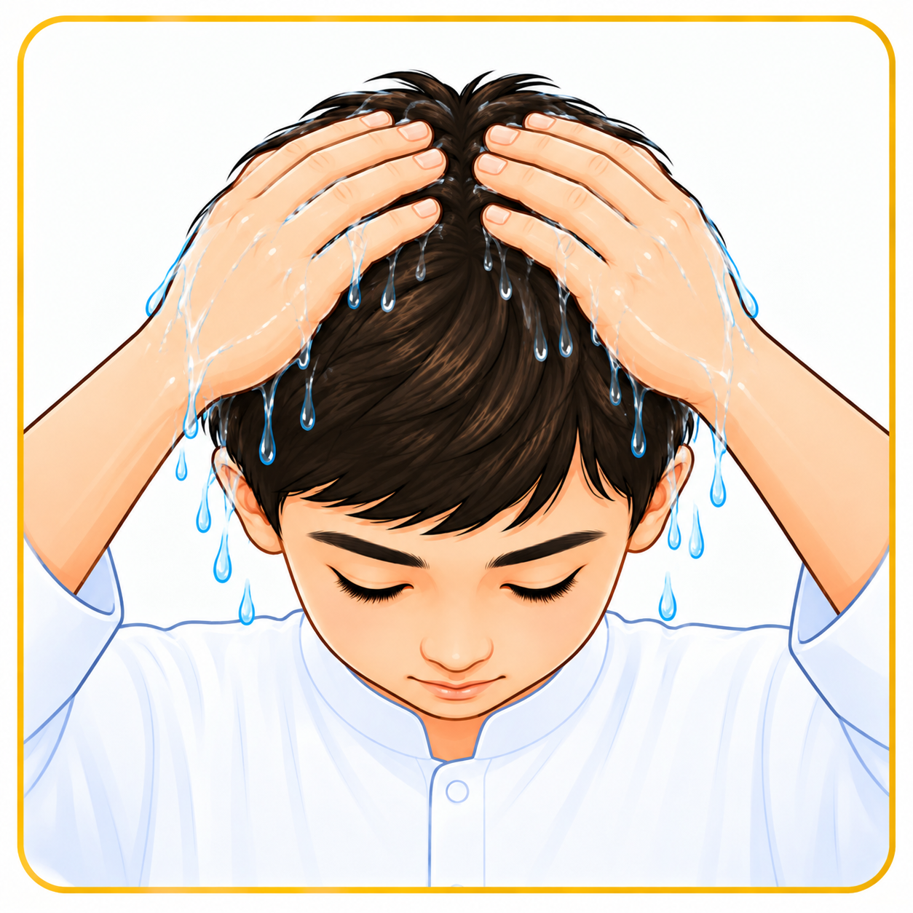
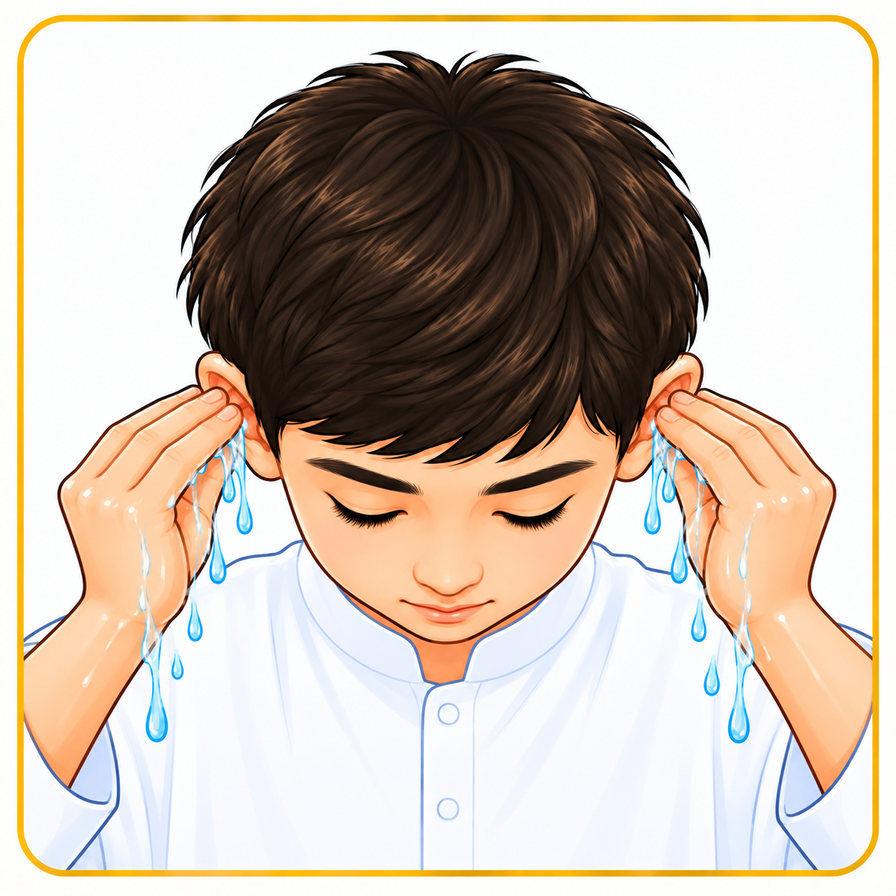
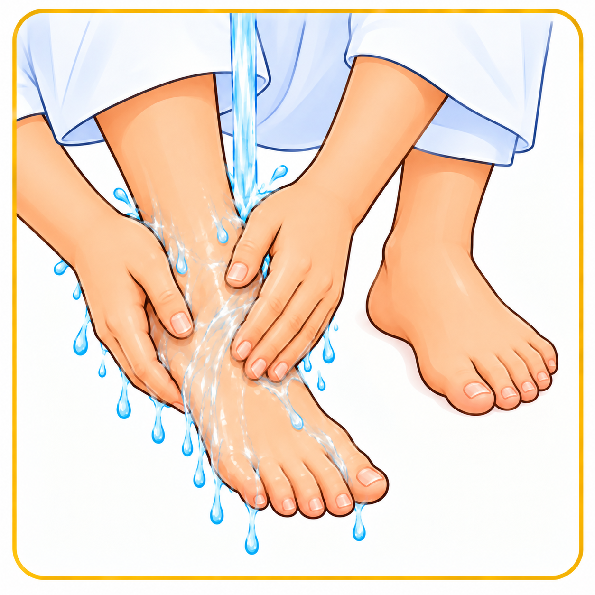
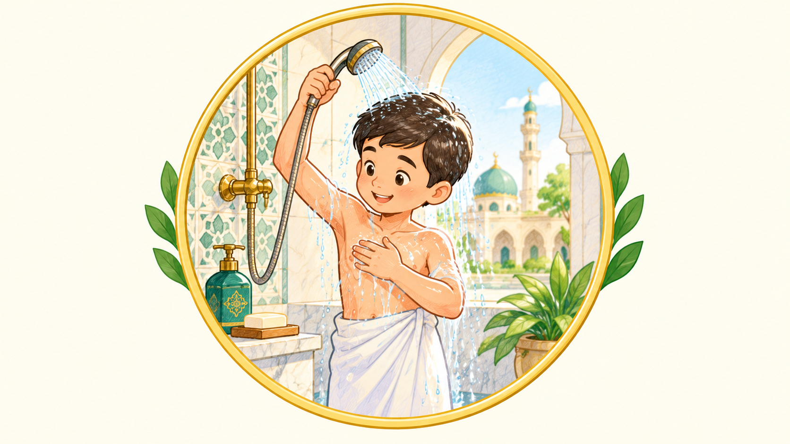
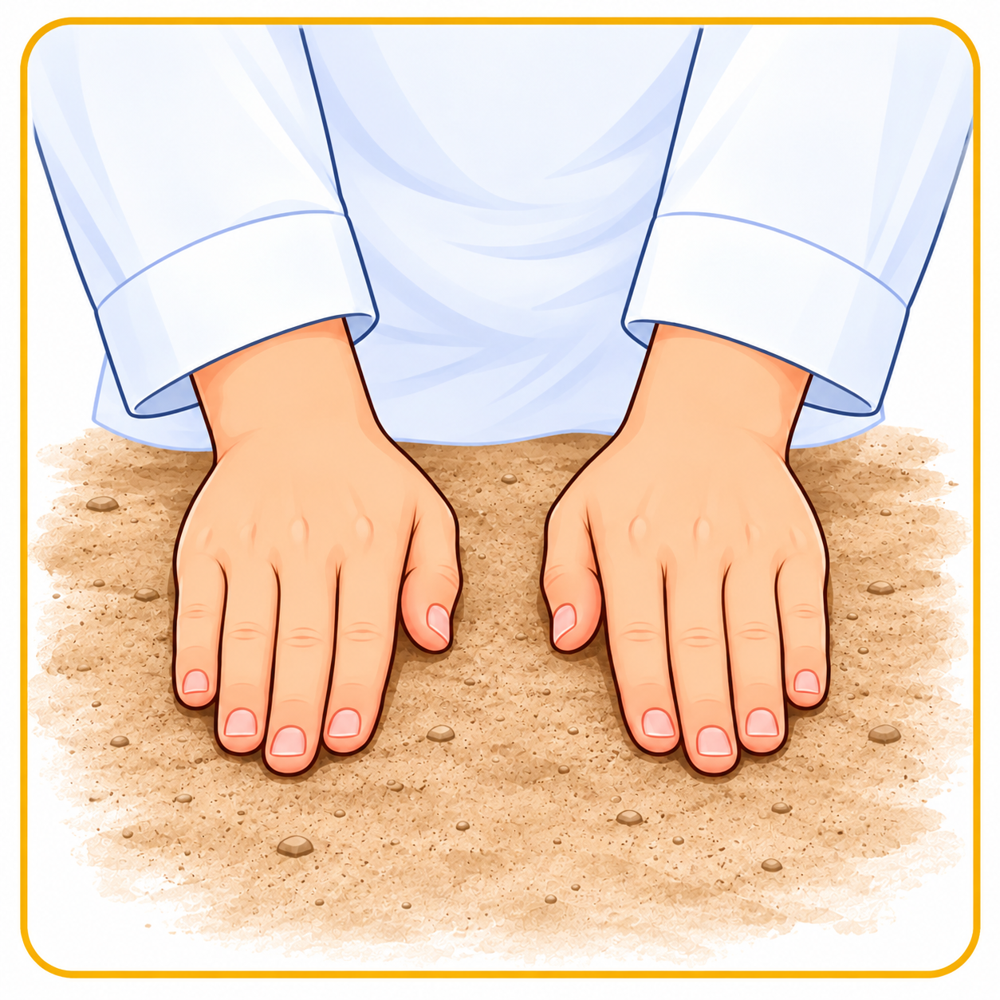
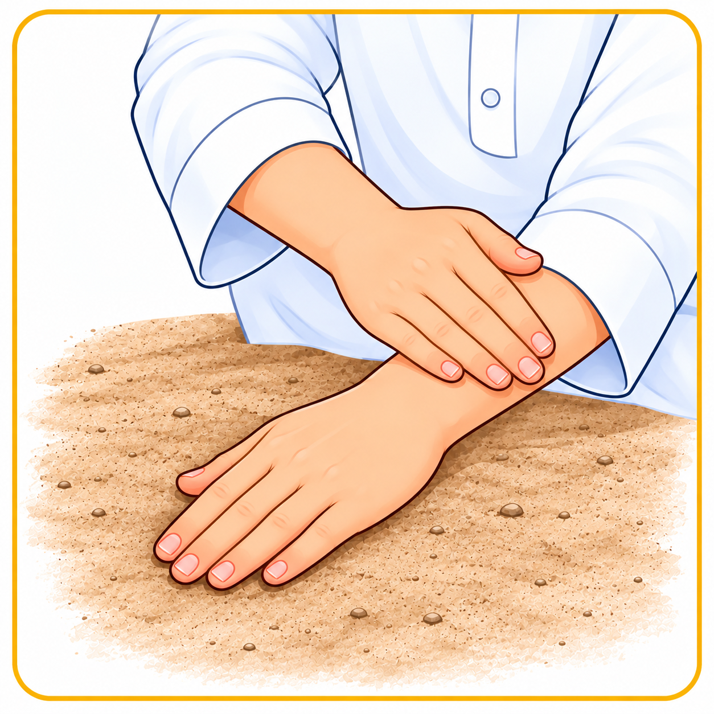

শরীরের পরিচ্ছন্নতা
- শরীর পরিষ্কার রাখো এবং ব্যক্তিগত পরিচ্ছন্নতার যত্ন নাও।
- টয়লেট ব্যবহারের পর যথাযথভাবে পরিষ্কার হও।
- শরীরে নাপাকি লাগলে নামাজের আগে তা দূর করো।
পবিত্রতা হলো শরীর, পোশাক ও মনের পরিচ্ছন্নতা।
এটি ইবাদতের প্রস্তুতি ও জীবনের সৌন্দর্য।
পবিত্রতা আমাদের শেখায় পরিচ্ছন্নতা ও সচেতনতা।
এর মাধ্যমেই ইবাদতে আসে প্রশান্তি ও পরিপূর্ণতা।
প্রথম পাঠ
দ্বিতীয় পাঠ
ওযু হলো নির্দিষ্ট অঙ্গ ধোয়া এবং মাথা ও কান মাসেহ করার মাধ্যমে নামাজের জন্য প্রয়োজনীয় পবিত্রতা অর্জনের পদ্ধতি।
মনে মনে আল্লাহর সন্তুষ্টির জন্য ওযু করার ইচ্ছা করো। নিয়তের বিষয়ে নির্ভরযোগ্য নির্দেশনা অনুসরণ করো।
প্রতিটি ধাপ মনোযোগ দিয়ে সম্পন্ন করো এবং প্রয়োজনীয় অঙ্গে পানি পৌঁছাও।
দুই হাত কবজি পর্যন্ত ভালোভাবে ধুয়ে নাও এবং আঙুলের ফাঁকে পানি পৌঁছাও।
কতবার: ৩ বার
পানি নিয়ে মুখে ঘুরিয়ে কুলি করো। রোজা থাকলে পানি গলায় চলে যাওয়া থেকে সতর্ক থাকো।
কতবার: ৩ বার
নাকে আলতোভাবে পানি নিয়ে পরিষ্কার করো এবং পানি বের করে দাও।
কতবার: ৩ বার
কপালের চুলের গোড়া থেকে থুতনির নিচ পর্যন্ত এবং মুখের দুই পাশ ভালোভাবে ধুয়ে নাও।
কতবার: ৩ বার
প্রথমে ডান হাত, তারপর বাঁ হাত কনুইসহ ভালোভাবে ধুয়ে নাও।
কতবার: প্রতিটি হাত ৩ বার

ভেজা হাত দিয়ে মাথা মাসেহ করো। মাসেহের নির্দিষ্ট পদ্ধতি নির্ভরযোগ্য নির্দেশনা থেকে শিখে নাও।
কতবার: ১ বার

ভেজা আঙুল দিয়ে কানের নির্ধারিত অংশ মাসেহ করো।
কতবার: ১ বার

প্রথমে ডান, তারপর বাঁ পা টাখনুসহ ধুয়ে নাও এবং আঙুলের ফাঁকে পানি পৌঁছাও।
কতবার: প্রতিটি পা ৩ বার
এখানে সাধারণ শিক্ষামূলক পদ্ধতি দেওয়া হয়েছে। বিস্তারিত বিধানের জন্য নির্ভরযোগ্য আলেমের পরামর্শ নাও।
তৃতীয় পাঠ

গোসল হলো নির্দিষ্ট অবস্থায় বড় অপবিত্রতা থেকে পবিত্রতা অর্জনের জন্য পুরো শরীরে পানি পৌঁছে দেওয়ার পদ্ধতি।
শরীরের কোনো অংশে পানি পৌঁছাতে বাধা থাকলে তা খেয়াল করো। ব্যক্তিগত পরিস্থিতি সম্পর্কে নির্ভরযোগ্য নির্দেশনা নাও।
চতুর্থ পাঠ
পানি না পাওয়া গেলে বা পানি ব্যবহার করলে ক্ষতির বাস্তব আশঙ্কা থাকলে নির্দিষ্ট শর্তে তায়াম্মুম করা যায়।
প্রযোজ্য নিয়ম ও শর্ত মেনে প্রতিটি ধাপ সম্পন্ন করো।

তায়াম্মুমের জন্য উপযুক্ত পবিত্র মাটিজাতীয় উপাদান ব্যবহার করো।
নির্ভরযোগ্য নির্দেশনা অনুযায়ী মুখ মাসেহ করো।

নির্দেশিত পদ্ধতি অনুযায়ী হাত মাসেহ সম্পন্ন করো।
তায়াম্মুম কেবল প্রযোজ্য শর্ত পূরণ হলে করা যায়। সঠিক পদ্ধতি নির্ভরযোগ্য নির্দেশনা থেকে শিখে নাও।
পঞ্চম পাঠ
নামাজের আগে ওযু ভেঙে গেছে নিশ্চিত হলে নতুন করে ওযু করো। শুধু সন্দেহ হলে নির্ভরযোগ্য বিধান জেনে নাও।
নাপাকি নিশ্চিত হলে নামাজের আগে তা যথাযথভাবে পরিষ্কার করো।
প্রযোজ্য অবস্থায় শুধু ওযু যথেষ্ট নয়। নামাজের আগে নির্ধারিত নিয়মে গোসল করে পবিত্রতা অর্জন করো।
তায়াম্মুমের শর্ত পূরণ হয়েছে কি না নিশ্চিত হয়ে নির্ভরযোগ্য নির্দেশনা অনুসরণ করো।
অনুমান করে সিদ্ধান্ত না নিয়ে বিশ্বস্ত আলেমের কাছে জেনে নাও। এই পেজটি প্রাথমিক শিক্ষার জন্য।